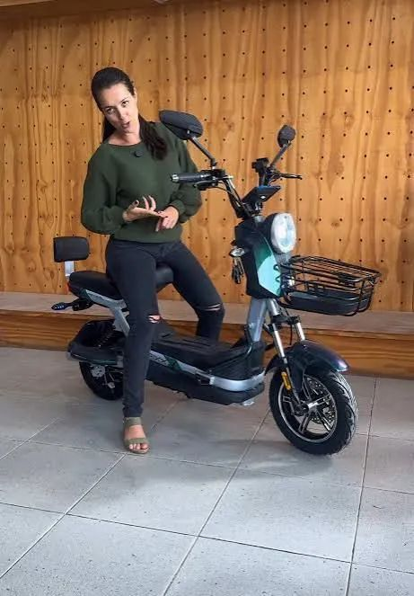
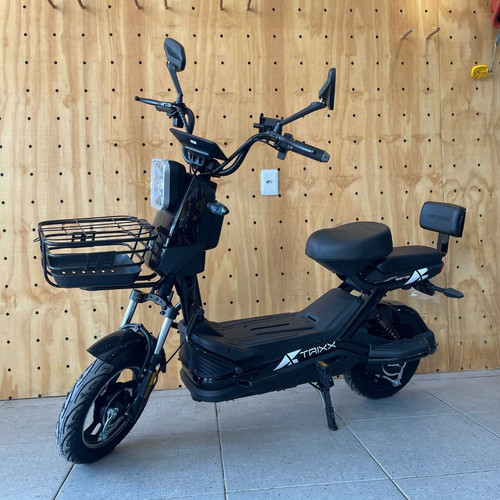
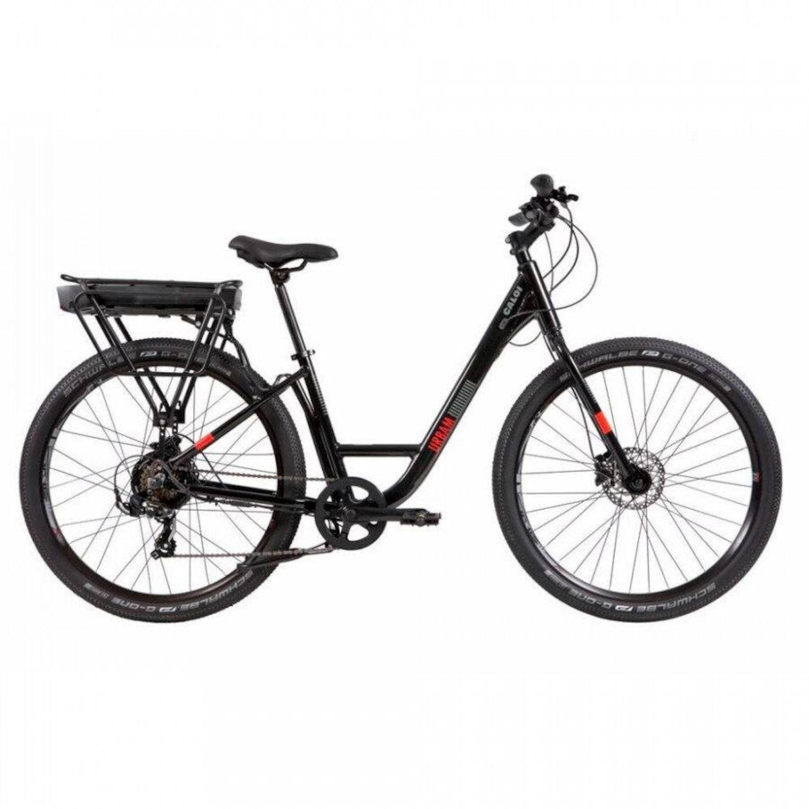

FOTO DE REFERÊNCIAScooter urbana
Uma referência visual para explorar a categoria com a equipe.
Consultar modelosMOBILIDADE ELÉTRICA · WR E-BIKES
Encontre uma bike ou scooter que combine com o seu dia — com orientação da equipe e uma oficina na própria loja.
Conte como pretende usar. A equipe pode ajudar a encontrar uma opção adequada.

Uma vitrine clara.
Uma conversa mais direta.
Veja as categorias, escolha o que chamou sua atenção e fale com a equipe sobre o modelo e a finalidade que você tem em mente.
Entenda o atendimentoESCOLHA POR TIPO
Cada rotina pede uma experiência diferente. Explore o que procura e consulte quais opções estão disponíveis na loja.
VITRINE DE REFERÊNCIA
As imagens abaixo são referências visuais de modelos do segmento. Pergunte à WR quais produtos, versões e cores estão disponíveis.
3 referências

FOTO DE REFERÊNCIAUma referência visual para explorar a categoria com a equipe.
Consultar modelosCompare formatos antes de conversar sobre os modelos atuais.
Consultar modelos
FOTO DE REFERÊNCIAVeja a categoria e peça orientação para a finalidade que procura.
Consultar modelosImagens de varejistas usadas apenas para visualizar o conceito. Não são fotos da WR e não confirmam modelos, estoque, preço ou especificações vendidos pela loja. Substituir por fotos autorizadas da WR antes de uso comercial.
ATENDIMENTO CONSULTIVO
Se você já gostou de algum modelo, peça mais fotos. Se ainda está em dúvida, conte para a equipe como pretende usar e peça uma recomendação.
Conversar com a equipeOFICINA NA LOJA
Além de apresentar os modelos, a WR conta com oficina. Consulte a equipe para saber como funciona o atendimento de manutenção.
Perguntar sobre a oficinaMANUTENÇÃO
Converse com a equipe sobre o seu modelo.
PRÓXIMO PASSO
Chame a WR, diga o que você procura e pergunte sobre fotos, disponibilidade e orientação para o seu uso.
Falar pelo WhatsApp